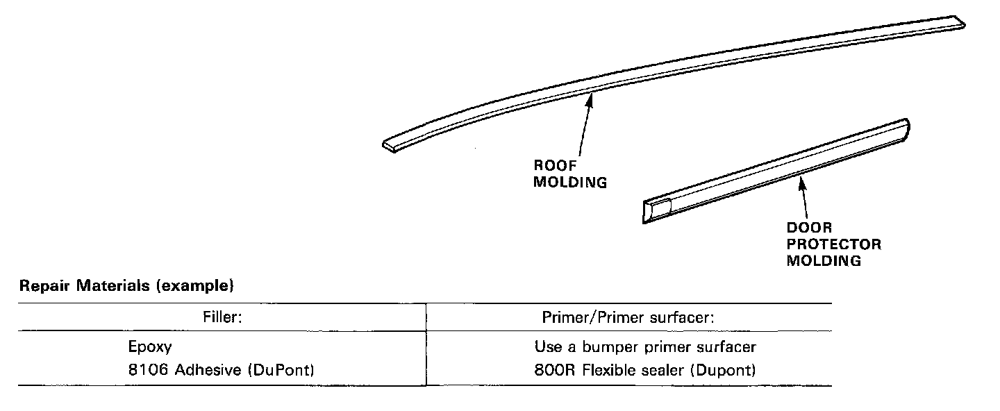
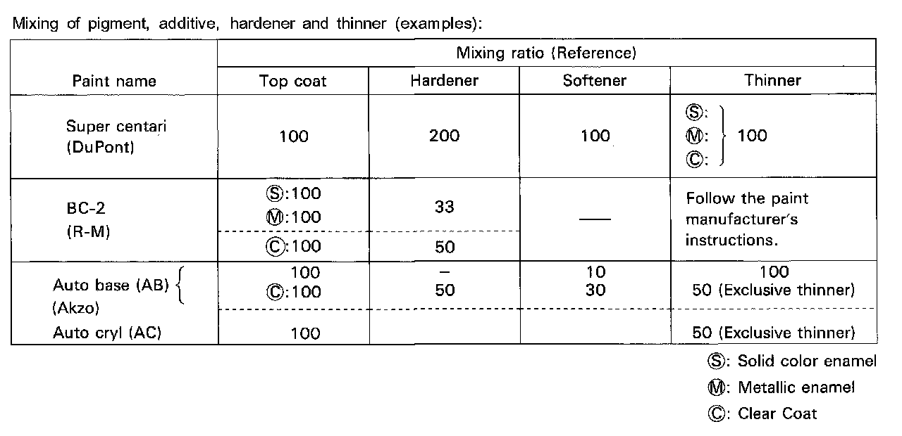

Poly (Vinyl Chloride) Parts
GeneralThe poly (vinyl chloride) part can be repaired when it is lightly damaged.
The repair procedure is similar to that of the PP resin and urethane resin parts.

NOTE:
- Poly (vinyl chloride) is a polymer of polyester and chloridation vinyl which has excellent heat resistance, chemical resistance and flexibility.
- Heat-resisting temperature: 176 degrees F(80 degrees C).
Paint Mixing Application

NOTE:
- Mix the paint, hardener and in the correct ratio.
- Follow the paint manufacturer's instructions.